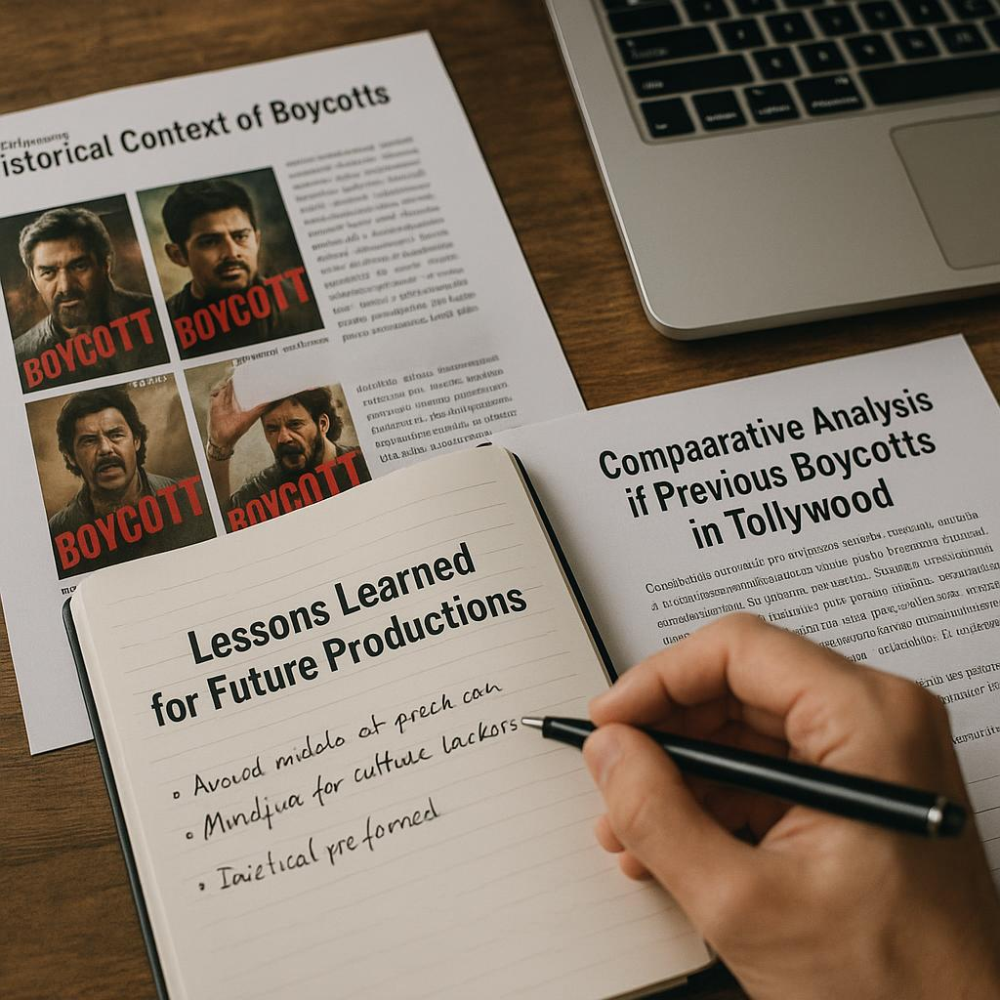

Understanding the #BoycottBhairavam Movement
The recent #BoycottBhairavam Trends in Tollywood, Director Issues Apology Amid Backlash - Deccan Chronicle has captured the attention of cinema lovers and critics alike. This movement has raised questions about accountability in the film industry and the power of public opinion. In this article, we will explore the roots of this trend and its implications for Tollywood.
What Sparked the #BoycottBhairavam Trend?
- Public outrage following controversial statements made by the film's director.
- Involvement of prominent Tollywood actors and directors who have either supported or condemned the remarks.
Who Are the Key Figures Involved?
Key players in the #BoycottBhairavam movement include the film's director, lead actors, and influential social media personalities. Their roles, whether as instigators or defenders, have significantly influenced public sentiment.
Reactions from the Tollywood Community
The Tollywood community has been divided in its response to the backlash surrounding the film. While some celebrities have taken a stand in favor of the boycott, others have chosen to remain neutral.
Public Responses on Social Media
- Many celebrities have voiced their support or opposition, leading to intensified discussions online.
- There has been a significant shift in audience sentiment, with many users taking to platforms like Twitter and Instagram to express their views.

Industry Reactions
Reactions from industry stakeholders vary widely. Some filmmakers have come out in support of the director, emphasizing the need for artistic freedom, while others have urged caution and sensitivity towards audience perceptions.
The Director's Apology: A Closer Look
In light of the growing backlash, the director issued a public apology aimed at mending the rift between him and the audience.
Details of the Apology
- The director acknowledged the backlash and expressed regret for any upset caused.
- He emphasized his commitment to addressing audience concerns moving forward.
Impact of the Apology on the Trend
The immediate effects of the apology on public perception have been mixed. While some fans appreciated the gesture, others felt it was insufficient to warrant support for the film.

Social Media's Role in Amplifying the Boycott
Social media has been instrumental in amplifying the #BoycottBhairavam movement, with various platforms serving as battlegrounds for opinions and counter-opinions.
Hashtag Analysis and Trends
- The growth in hashtag usage and engagement has been notable, with #BoycottBhairavam trending for several consecutive days.
- This trend reflects a broader conversation about accountability in cinema and the impact of celebrity culture on public opinion.
Influencer Involvement
Influencers have played a crucial role in shaping the narrative surrounding the boycott. Their endorsements or criticisms can sway public opinion dramatically, showcasing the power of social media in contemporary discourse.

Comparative Analysis of Previous Boycotts in Tollywood
To understand the implications of the #BoycottBhairavam movement, it is essential to look back at past boycotts in Tollywood and their outcomes.
Historical Context of Boycotts
- Notable past boycotts include those against films that featured controversial themes or statements.
- Each boycott has been shaped by public sentiment and the responses of filmmakers, providing valuable lessons for the current situation.
Lessons Learned for Future Productions
Strategies that worked or failed in previous boycotts can offer insights for filmmakers today. Engaging with audiences and being mindful of cultural sensitivities are paramount in avoiding backlash.
The Broader Impact on Tollywood and Cinema
The fallout from the #BoycottBhairavam movement extends beyond individual films, impacting the larger Tollywood landscape.
Cultural Implications
- There are noticeable shifts in audience demographics and tastes, with younger viewers increasingly vocal about their preferences.
- The movement highlights the importance of cultural sensitivity in filmmaking, as audiences demand representation and respect for their values.
Economic Ramifications
The financial consequences for affected films can be significant. A successful boycott could lead to reduced box office revenues and long-term impacts on the careers of those involved.

Looking Ahead: The Future of #BoycottBhairavam
As the movement continues to evolve, it is essential to consider what the future holds for #BoycottBhairavam.
Predictions for Ongoing Trends
- Possible trajectories for the boycott movement may include increased scrutiny of filmmakers and their statements.
- Public engagement may lead to a more accountable film industry, where audience voices are prioritized.
Recommendations for Filmmakers
Filmmakers are encouraged to take proactive steps to address public concerns. This includes prioritizing audience feedback, engaging with fans constructively, and being mindful of cultural sensitivities to avoid similar backlash in the future.
Practical Tips
For filmmakers and industry professionals navigating the current landscape, consider the following practical tips:
- Conduct audience surveys to gauge public sentiment before major announcements.
- Engage with fans on social media to build rapport and trust.
- Implement sensitivity training for all staff to better understand cultural nuances.
Quick Checklist
- Analyze public feedback on social media platforms.
- Prepare crisis management strategies for potential backlash.
- Foster open communication channels with your audience.
Frequently Asked Questions
-
What is the main reason behind the #BoycottBhairavam trend?
The trend was sparked by controversial comments made by the film's director, which were perceived as offensive by a significant portion of the audience.
-
How has social media impacted the boycott movement?
Social media has played a crucial role in amplifying voices against the film, with hashtags trending and users sharing their opinions widely.
-
What was included in the director's recent apology?
The director acknowledged the backlash, expressed regret for the upset caused, and emphasized his commitment to addressing audience concerns.
-
Can we draw comparisons between #BoycottBhairavam and past boycotts in Tollywood?
Yes, there are historical precedents of boycotts in the industry, each shaped by public sentiment and the responses of filmmakers.
-
What are the potential economic effects of this boycott on the film?
The boycott could lead to reduced box office revenues and impact the film's overall success, particularly if it gains traction.
-
What steps can filmmakers take to avoid similar backlash in the future?
Filmmakers should prioritize audience feedback, engage with fans constructively, and be mindful of cultural sensitivities.
Source: Link